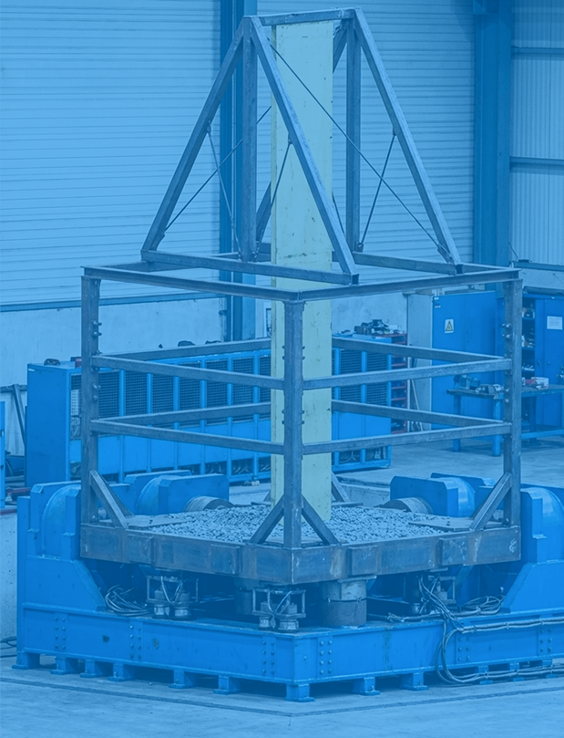

」
」


SZシーリングシリーズ
（地震対策天井）
Trusted&Safety
安全と信頼で次世代へ繋ぐ 明日を作る
25㎡（5m×5m）のテーブル上で、三軸同時加振による
大規模な振動試験が可能です。大型の資機材に実地震波を
入力した試験にも対応できます。
2026.X.XX 三次元振動試験機「E-Simulation」のサイトを公開しました。
ABOUT
実地震波を高精度で再現する大型振動試験機により、
三方向からの振動によるリスクを可視化。
現実に近い製品・設備の耐震性能を検証します。

Engineering Safety and Trust
最大振幅600mm（水平）の変位性能により、過去の主要な
地震波データを三方向に忠実に再現可能です。
試験映像
Test Video
最大振幅600mm（水平方向）の変位性能により、過去の主要地震波を 三次元で忠実に再現します。

建築部材・設備部材、免震・制振デバイス、家具・家電、 情報通信機器、医療機器、生産設備、交通、インフラなど
Products
三洋工業は振動試験機による加振試験等、各種性能検証を行い
「安心・安全」な製品開発に取り組んでいます
（地震対策天井）

（エキスパンションジョイントカバー）

（耐震体育館床下システム）
Exterior View


敷地内に新設された試験棟は、3フロアあり試験の実施に最適な設計がされています。
Entrance Lobby

1 階平面図

当社木目調天井ルーバーを施したエントランスからも振動試験の様子が確認できるよう室内窓を設けています。 打合せスペースとしてもご利用いただけます。
Meeting Room
 １階平面図
１階平面図


How It Works


試験対象物の概要・目的・想定条件をご共有ください。 内容確認後、実施可否と概算スケジュールをご案内します。
評価項目や再現地震波形、加振条件を整理し、 目的に応じた最適な試験計画と実施費用をご提案します。
確定条件に基づき試験プログラムを設計。 治具計画や安全確認を行い、万全の体制を整えます。
三方向同時加振により実スケールで検証。 リアルタイムでデータ取得・挙動を記録します。
取得データを解析し、加速度や変位などの評価結果を レポートとして提出します。
News
三洋工業 技術研究所開発の三次元振動試験機 E-Simulation®のページを公開しました。
試験の申し込みを受付開始しました。
ゴールデンウィークのお知らせ